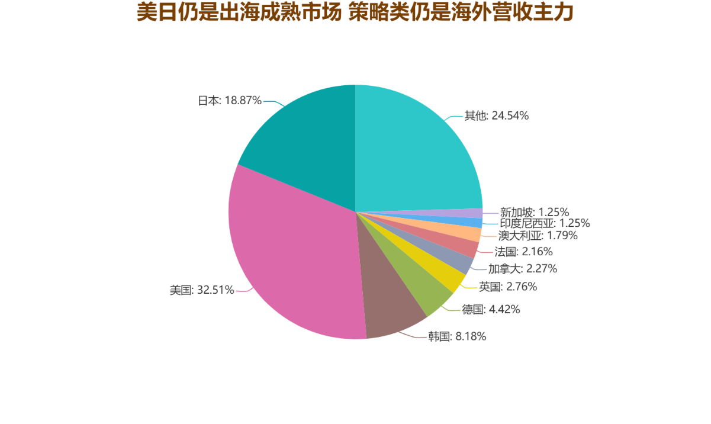
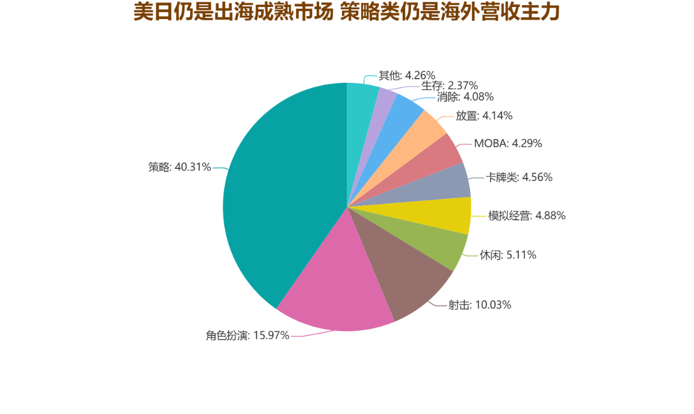

2023年，我国自主研发游戏国内市场实际收入为2563.75亿元，同比增长15.29%。
相对而言，2023年，中国自主研发的游戏产品在海外市场的销售实现了163.66亿美元的收入。这一数字的实现，标志着中国自研游戏在海外市场的收益连续第四年突破了千亿人民币的门槛，不仅展现了中国游戏产业的无限潜力，也反映了中国游戏品牌在全球范围内的强大竞争力。然而，与之前年份相比，收入同比下降了5.65%，揭示了一个不容忽视的现实——尽管中国游戏在海外的影响力仍在持续扩大，但它们面临的挑战也在不断增加。
此次收入下滑的背后，是多方面因素的叠加影响。首先，全球政治经济形势的复杂多变给游戏行业的国际扩展带来了不小的压力。同时，由于全球游戏市场竞争愈发激烈，中国自研游戏在海外市场的竞争环境也变得更加复杂。此外，许多成熟市场近年来在数据隐私和网络安全方面出台了更加严格的政策，这些变化无疑增加了中国游戏企业在经营海外市场时的法律和合规成本，也对原有的商业模式提出了新的挑战。
2023年，中国自主研发的移动游戏在海外销售收入的分布显示出了鲜明的地理特点。具体来说，美国以32.51%的市场份额位居首位，成为中国游戏出口的最大市场。紧接着是日本，占据了18.87%的比重，显示出日本用户对中国移动游戏产品的热烈欢迎。韩国市场同样不容忽视，8.18%的份额使其成为中国游戏企业海外扩展的重要方向之一。这三个市场共同构成了中国游戏在海外销售的主力军，总共占据了市场份额的59.56%，凸显出它们在中国游戏制造商海外战略中的核心位置。
除此之外，欧美的另外三个国家——德国、英国和加拿大——也显示出对中国移动游戏的显著兴趣，它们的市场份额总计达到9.45%。这个数据虽然相对较小，但仍旧证明了中国游戏在全球范围内的吸引力，并指出了中国游戏企业在拓展国际市场时需要考虑的其他潜在区域。
2023年，中国自主研发的移动游戏，海外收入排名前100的游戏中，策略游戏以其占据40.31%的重要份额领先，接近一半，角色扮演游戏则以15.97%紧随其后，而射击游戏也不甘落后，占比达到了10.03%。综合来看，这三类游戏共同占据了总比例的66.31%，逾一半以上。此外，在这份榜单中，休闲游戏和模拟经营游戏也分别占据了5.11%和4.88%的市场份额。
回顾过去三年的数据，可以明显看出策略游戏在海外市场上一直是中国自主研发移动游戏收入的主力军，而角色扮演游戏和射击游戏也是重要的收入来源。这一趋势突显了中国游戏开发者在策略、角色扮演和射击这几个游戏类型上的强大竞争力及其在国际市场上的受欢迎程度。随着市场继续发展和用户口味的逐渐多样化，中国游戏开发者有望在更多游戏类型上取得突破，继续扩大其在全球市场上的影响力。